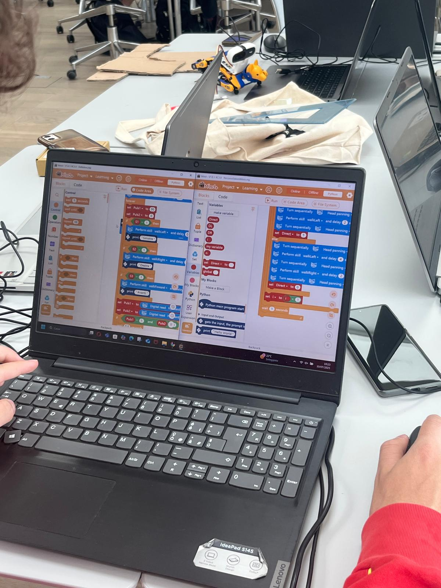
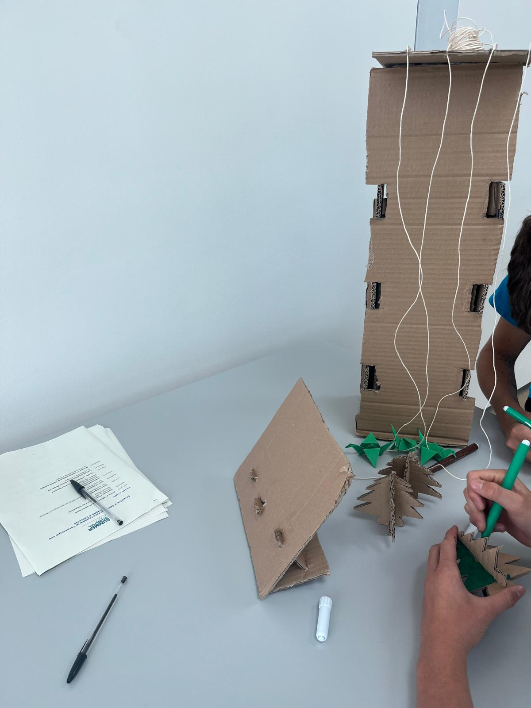

Giorno 3
~Mattina~Abbiamo modificato i colori per renderlo più piacevole da guardare rimandendo sempre più o meno sul tema jurassico
Ultimi ritocchi allo script
Finito design testa trex, inizio design piedi , costruzione ambiente

Finito training ai, riconosce i colori verdi e rossi
~Pomeriggio~
Sito quasi completamente finito, in programma di cambiare i colori e i font
Completata
Progressi sullo sviluppo 3d del modello del trex